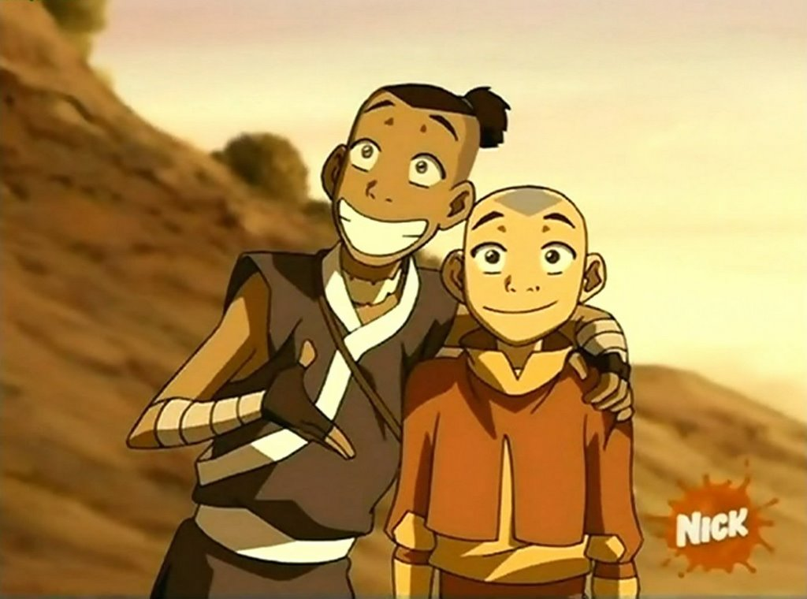
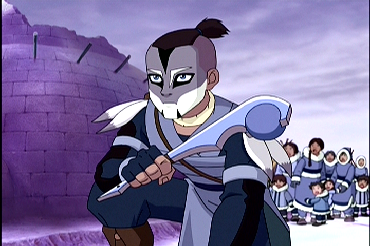
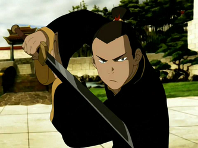

Un chico de 16 años, este joven guerrero de la Tribu del Agua del Sur, junto con su hermana Katara, acompañan a Aang en su viaje para derrotar al Señor del Fuego.
Soka es un No maestro, aunque no considera esto una barrera que lo detenga. Es imaginativo y perspicaz hasta ser desconcertante, muy astuto, y en muchas ocasiones suele ser sarcástico. En un principio no era hábil luchando, pero progresó rápidamente, se volvió bueno con el bumerán y la espada (lo segundo luego de ser entrenado por el maestro espadachín Pian Dao).
La hoja de la espada de Soka es negra, hecha de un meteorito y resulta excepcionalmente resistente.
|  |  |  |
Aang |
Katara |
Toph |
Zuko |